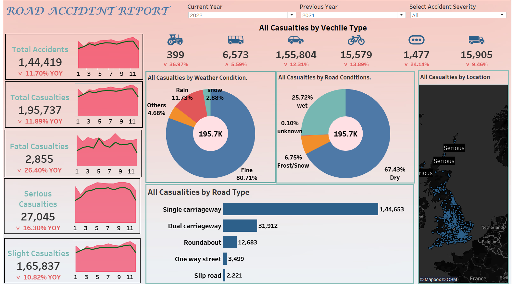
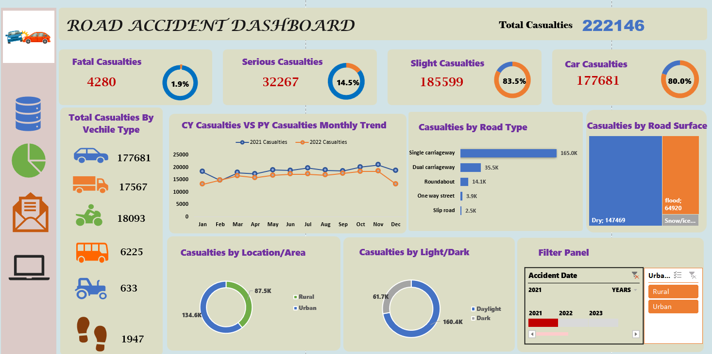
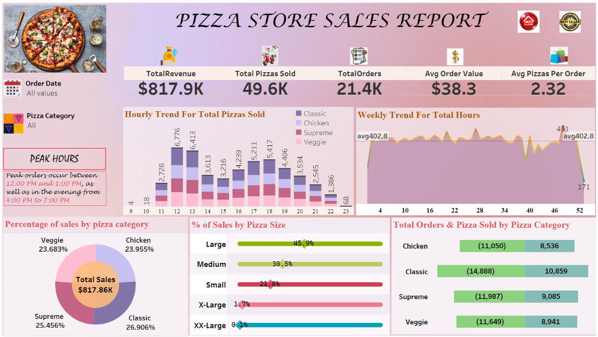
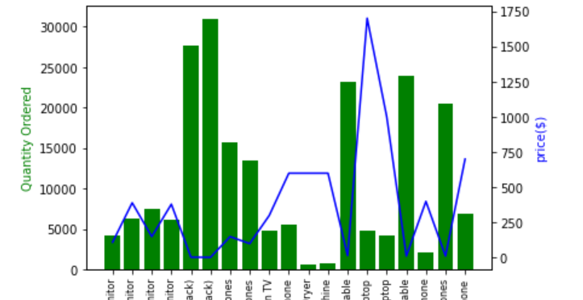

The road accident analysis project aims to analyze historical data to understand road accident patterns and factors contributing to accidents. Through data collection, preprocessing, and exploratory data analysis, insights into accident severity, locations, and temporal distribution are derived. Predictive modeling techniques are employed to forecast accident likelihood and impact. Risk assessment identifies high-risk areas and conditions, informing targeted interventions for improved road safety. Visualizations in tools like Tableau or Excel effectively communicate findings to stakeholders, facilitating collaboration and informed decision-making. Recommendations and solutions proposed based on analysis findings aim to mitigate accidents, ultimately reducing injuries and fatalities on the road.

This project utilized Tableau to visually explore and analyze road accident data, aiming to uncover insights and patterns to enhance road safety measures. Through interactive dashboards and visualizations, it showcased trends in accident severity, locations, and contributing factors, aiding in understanding accident dynamics. The visualizations highlighted hotspots, temporal patterns, and correlations, enabling stakeholders to make informed decisions and implement targeted interventions. Leveraging Tableau's capabilities, the project facilitated effective communication of findings, fostering collaboration and awareness among stakeholders. Overall, the project's visualization in Tableau provided a comprehensive understanding of road accidents, empowering stakeholders with actionable insights for improved road safety strategies.

This project leveraged Excel for visualizing and analyzing road accident data, offering a comprehensive overview of accident trends and patterns. Through Excel's charting and data analysis features, it showcased key metrics such as accident severity, locations, and temporal distribution. Visual representations, including bar charts, line graphs, and heatmaps, provided stakeholders with intuitive insights into accident dynamics and hotspots. The project's Excel-based analysis facilitated data-driven decision-making and targeted interventions to enhance road safety measures. Excel's flexibility and accessibility made it a valuable tool for communicating findings and fostering collaboration among stakeholders. Overall, the project demonstrated Excel's effectiveness in exploring and visualizing road accident data, enabling stakeholders to take proactive steps towards improving road safety.
This project delves into sales data from Walmart, examining various factors such as branch performance, customer behavior, and product trends. It encompasses data cleaning, feature engineering, exploratory data analysis (EDA), and insights generation. By analyzing sales patterns, customer demographics, and product performance, valuable insights are derived to optimize marketing strategies, enhance customer experiences, and improve overall business performance.

"Crafted an insightful pizza sales analysis using Tableau, visualizing key metrics such as revenue trends, top-selling pizzas, and customer preferences.In this project, Analyze the sales data of a pizza store to extract actionable insights that can help optimize operations to improve customer satisfaction and drive revenue growth. Aim to provide valuable information for decision-making and strategy development.
Description: This project analyzes a dataset from Netflix, exploring movies and TV shows' attributes such as titles, directors, release dates, categories, and ratings. It involves data cleaning, exploratory data analysis (EDA), feature engineering, and insights generation. The analysis highlights trends, patterns, and characteristics of Netflix content, providing valuable insights for understanding viewer preferences and content trends.
Tools: Python, Pandas, Seaborn.

The analysis begins by merging multiple CSV files containing sales data into a single DataFrame using Pandas. The data is cleaned to handle missing values and convert data types where necessary. Key insights are derived, including identifying the best month for sales, the city with the highest sales, optimal advertisement timing, products frequently sold together, and the best-selling products. Visualizations such as line plots, bar plots, and combination analysis are utilized to present these insights effectively.